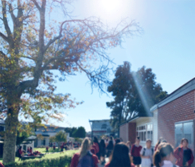
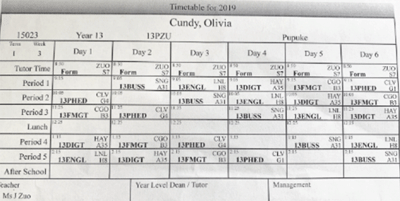
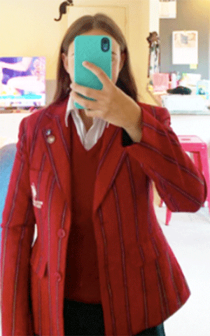

Expectations For High School
At high school there are many things that over my 5 years I have found out on what the expectations of high school are with general expectations and then expectations for each year level. In this page I will be providing information on the expectations of high school and what is expected of the students. To start with im going to be providing some general expectations for students at high school.
Different subjects are going to have different amounts of homework, some will have more than others depending on the subject and this is something that the students need to manage
Assignments and tests are normally around the same time for each subject because units end around the same time for multiple subjects which there is the expectation that students need to be prepared for having multiple assessments on at the same time.
There is an expectation that students are on time to their next class. In a lot of high school you are moving throughout the day to multiple different classes and it is expected that you get to those classes on time so that the lesson can start as soon as the teacher arrives. A Lot of the time teachers will start the lesson whether you are there or not because they have a lot of content that they want to get through and want to maximise the learning which is why it is important for students to be on time to class or else they will fall behind.
One of the main expectations at high school is that if homework is given and due the following day it is complete or else a detention is issued. At high school it is expected that students are given around an hour of homework each night from their subjects and that the work is due the next day completed. A Lot of high school puts a lot of emphasis on homework as a way to help the students further their learning and teach them about meeting deadlines and managing their time.
Uniform. This is an expectation that is non academic but is just as important to high schools. A Lot of high schools have policies and procedures in place to ensure that all students follow the uniform rules and it is an expectation from high school that all students follow these rules and wear the uniform correctly.
For each different year in high school there are different expectations that come with each year being at high school. I will be providing more specific expectations for students going to high school on the expectations for each year level ranging from year 9 - 13. This information will come from my personal experience in each year level and what I experienced of what was expected of me in each year level.
Year 9 : In year 9 as it is the first year of high school there is not much expectations on the students as it is more about learning everything about the school and the way that the school runs and getting used to being in high school but also a new school.
Year 10 : In year 10 there is the expectation that now that you have been at school for a year, you now know all about the school and what is expected. The expectations in year 10 gets higher with school work then year 9 and the workload increases and the expectation is that the students will be able to handle the workload.
Year 11 : Year 11 is the first year of being a senior in high school. With being a senior it brings expectations of its own that you are now a role model to the juniors and there is higher expectations of increased workload and being able to handle pressure better with more assignments and tests on because each year the expectation increases for work being harder and having more tests and assignments.
Year 12 : Year 12 is arguably the most important year at high school which has it own expectations with being the most important year. This is because the results from year 12 exams are those that the Universities get which is why it makes year 12 extra important and the most important year at high school. With this expectation on students being that year 12 is the most important year, there is the expectation that students will put in the most effort and commitment to their school work to ensure that they have a good year and the results reflect this but also be able to deal with the high amounts of pressure that is put on them from the range of subjects they have and the number of assessments and tests throughout the year.
Year 13 : In year 13 there is the expectation that being the last year of high school that from the previous 4 years of knowledge that has been gained you then use all that knowledge in order to help with year 13. The expectation in year 13 is that being the last year, you are the role models to everyone else and everyone looks up to the year 13’s for guidance and advice as they have been through it all and on the last year before leaving school.


